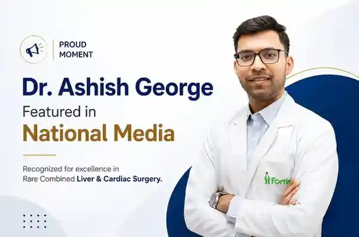

Dr. Ashish George Featured in National Media for Rare Combined Liver & Cardiac Surgery
29 May 2026

Dr. Ashish George has been featured in some of India’s most trusted and widely read news publications for his association with a rare combined liver and cardiac surgical achievement. This recognition highlights his expertise in complex liver surgery and his commitment to advancing specialised surgical care in India.
The media coverage focuses on a rare and complex medical procedure involving combined liver and cardiac surgery performed on two patients in Delhi. These cases required advanced planning, coordinated medical teamwork, and strong collaboration between liver transplant and cardiac care specialists.
A Moment of National Recognition
Being featured in nationally recognised media is an important achievement. It reflects years of dedication, surgical precision, and a consistent commitment to improving outcomes for patients with complex liver and hepatobiliary conditions.
Dr. Ashish George’s name has been highlighted across three major news platforms:
- The News Mill
- NDTV Health
- ANI News
NDTV is one of India’s most trusted television and digital news networks. ANI, Asian News International, is one of the country’s leading news agencies. The News Mill is also a credible digital news platform. Coverage across these platforms reflects the significance of the surgical achievement and the credibility associated with Dr. Ashish George’s work in the medical community.
What the News Coverage Is About
The news coverage is related to a rare combined liver and cardiac surgery performed on two patients in Delhi. Both patients required treatment for serious liver and heart conditions, making the procedures medically complex and highly specialised.
Such combined procedures are uncommon and require detailed planning from multiple departments. The success of these cases demonstrates not only surgical skill but also an integrated, multidisciplinary approach to patient care.
These procedures required:
- Seamless coordination between hepatobiliary and cardiac surgical teams
- Precise pre-operative planning and clinical assessment
- Advanced intraoperative monitoring and critical care support
- Careful post-surgical management of liver and heart recovery
This approach reflects the kind of multidisciplinary care that Dr. Ashish George has consistently supported throughout his career.
Why This Recognition Matters
In specialised medicine, reputation is built through clinical experience, patient outcomes, peer trust, and public recognition. When a surgeon’s work is covered by leading national news platforms, it adds an important layer of credibility.
For patients and families searching for expert liver care, this recognition can provide reassurance. It helps them understand that the doctor’s work has received attention from credible media outlets because of its medical significance.
For complex liver conditions, patients often look for a specialist who can manage advanced surgical planning, transplant-related care, cancer surgery, and multi-speciality coordination. This recognition strengthens the trust associated with Dr. Ashish George’s expertise.
About Dr. Ashish George
Dr. Ashish George is a highly experienced liver surgery specialist with expertise in hepatobiliary and pancreatic surgical care. His clinical approach combines surgical precision with patient-focused care, especially in complex and advanced liver conditions.
His areas of specialisation include:
- Liver transplant surgery including living donor and deceased donor transplants
- Hepatocellular carcinoma surgery for liver cancer treatment
- Complex biliary surgeries for bile duct conditions and obstructions
- Pancreatic surgeries including Whipple’s procedure and distal pancreatectomy
- Laparoscopic and minimally invasive liver procedures
- Management of liver cirrhosis complications including portal hypertension, variceal bleeding, and ascites
- Combined multidisciplinary surgical planning with oncology, cardiology, anaesthesia, and critical care teams
Over the years, Dr. Ashish George has managed several complex liver and HPB cases. His ability to work across multidisciplinary teams makes him a trusted specialist for patients requiring advanced surgical evaluation and treatment planning.
Multidisciplinary Care in Complex Surgery
The rare combined liver and cardiac surgeries highlighted in the news reflect the growing importance of multidisciplinary care in advanced medicine. Some patients may have more than one major organ condition at the same time. In such cases, treating one condition separately may not be enough.
A coordinated treatment plan allows different specialists to assess the patient together and decide the safest sequence of care. This may include liver specialists, cardiac surgeons, anaesthesiologists, intensivists, radiologists, nutrition experts, and critical care teams.
Dr. Ashish George has been associated with this integrated approach to care, where the focus is not only on one organ but on the patient’s complete medical condition.
Read the Full News Coverage
The rare combined liver and cardiac surgery achievement has been covered by leading national media platforms. The coverage includes:
- The News Mill – Delhi Hospital completes rare combined liver and cardiac surgeries, saving two lives
- NDTV Health – Delhi hospital saves two patients with rare combined liver and heart procedures
- ANI News – Delhi private hospital performs rare combined liver cardiac surgeries, saves two
These media features highlight the importance of advanced liver and cardiac care planning in complex surgical cases.
Consult Dr. Ashish George
If you or a loved one is dealing with a complex liver condition, liver tumour, bile duct disease, cirrhosis-related complication, or requires expert surgical evaluation, Dr. Ashish George offers specialised consultation for patients across India and internationally.
His experience in liver surgery, transplant care, hepatobiliary procedures, and multidisciplinary case planning makes him a trusted name for patients looking for advanced liver care.
Patients are encouraged to seek timely evaluation, especially when dealing with advanced liver disease, liver cancer, complex bile duct conditions, or transplant-related concerns.